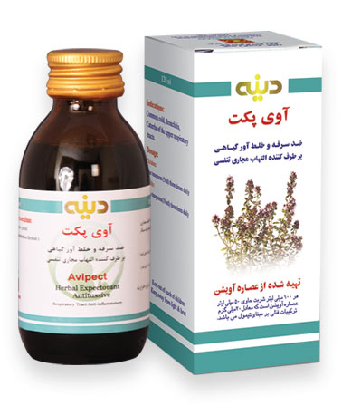

شربت آوی پکت
ضد سرفه، خلط آور و ضد اسپاسم برونش ها
بسته بندی و شکل دارویی:
شربت خوراکی در شیشه های 120 میلی لیتری
موارد مصرف:
تسکین سرفه های ناشی از سرماخوردگی، برونشیت، سیاه سرفه، لارنژیت، تنگی نفس و سرفه های ناشی از عوامل تحریکی مانند آلودگی هوا و دود سیگار، ضد عفونی کننده و برطرف کننده التهاب مجاری تنفسی فوقانی و ترشحات آن،خلط آور
آویشن دارای خاصیت ضد سرفه، خلط آور و ضد اسپاسم برونش ها اسـت. اثر خلط آور آن وابسته به تحریـک مژکـها به وسیـله ترپن ها و نیز تولیـد موکـوس نرم باویسکوزیته کمتر و دفع خلط غلیظ و تسهـیل خروج آن مـی باشد. خاصـیت ضد اسپاسم آن مربوط به ترکیبات فلاونوییدی، فنولی و اسـانس مـی باشد. در یک مطالعـه رانـدوم دوسوکور 60 بیمار مبتـلا به سـرفـه های شدید به مدت 5 روز تحت درمان شربت آویشن (روزی 3 مرتبـه و هر بار 10 میلـی لیتر) قـرار گرفتـه و سپـس نتـایج به دسـت آمـده با نتـایـج گـروه کنـترل کـه برم هـگزین دریافت کرده بودند مقایسه شد. نتایج در هر دو گروه اثر ضد سرفه و خلط آور مشابهی را نشان داد که مؤید تاثیر شربت آویشن در کاهش سرفه و دفع خلط می باشد. همچنین آویشن به واسطه حضور ترکیبات تیمول و کارواکرول دارای خواص ضد باکتریایی و ضد قارچ می باشد.
بزرگسالان: روزانه 3 بار، هر بار 2 قاشق مرباخوری (معادل 10 میلی لیتر) .کودکان: روزانه 3 بار هر بار 1 قاشق مرباخوری (معادل 5 میلی لیتر).
با رعایت دوز درمانی تا کنون گزارشی از تداخل اثر مشاهده نگردیده است.
ندارد.
در افراد با سابقه حساسیت و آلرژی به گیاه آویشن و فرآورده های آن استفاده از دارو منع مصرف دارد. به دلیل وجود ساکارز ، در افراد دیابتیک با مشورت پزشک معالج مصرف شود.
منع مصرف ندارد.
- داروها باید دور از دسترس اطفال نگهداری شود. - جهت سرفه کودکان و یا در افرادی که الکل موجود در عصاره آویشن برایشان مناسب نیست ، مصرف شربت پدی کاف توصیه می شود .
فرآورده داخل جعبه، دور از نور و گرما نگهداری شود.
۱۲۲۸۰۵۹۶۳۶
ندارد.